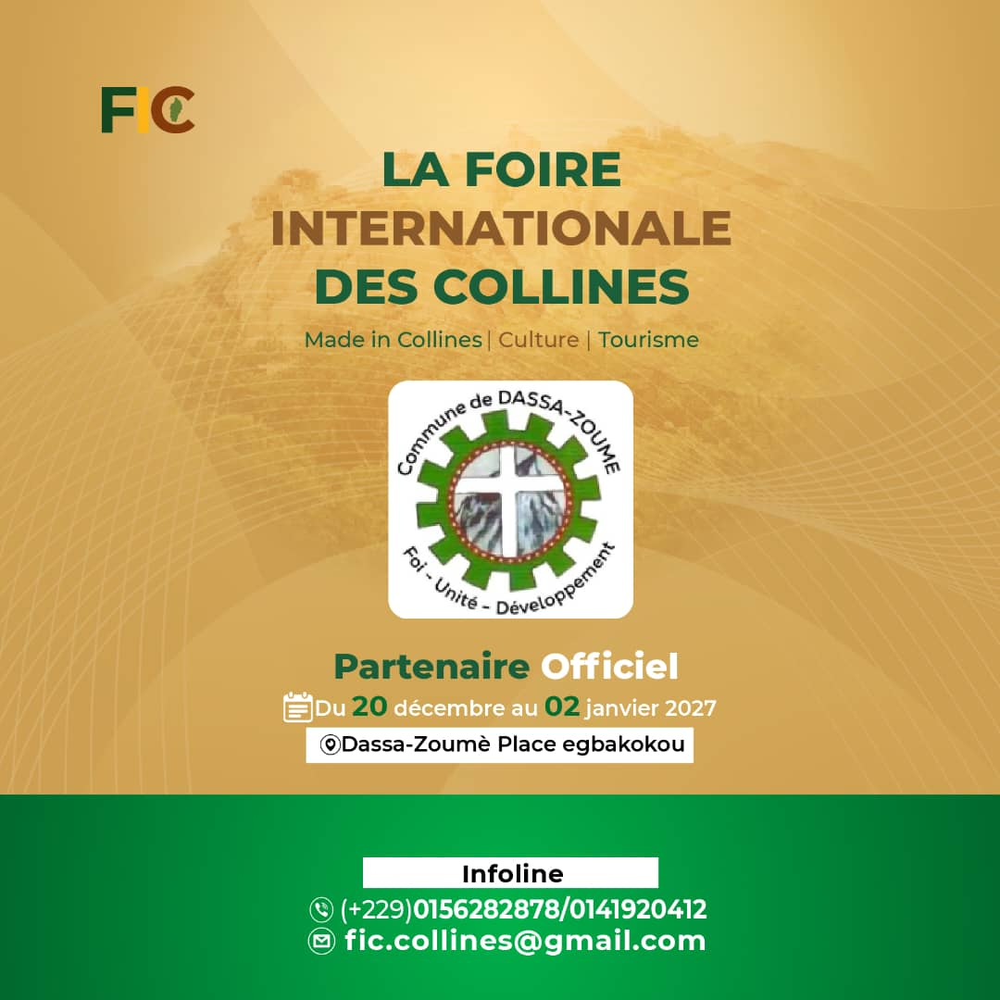

Mairie de Dassa-Zoumè
La Foire Internationale des Collines est heureuse de compter sur l'accompagnement de la Mairie de Dassa-Zoumè pour sa première édition.
Un engagement qui témoigne d'une volonté commune de valoriser les richesses, les talents et les savoir-faire des Collines.